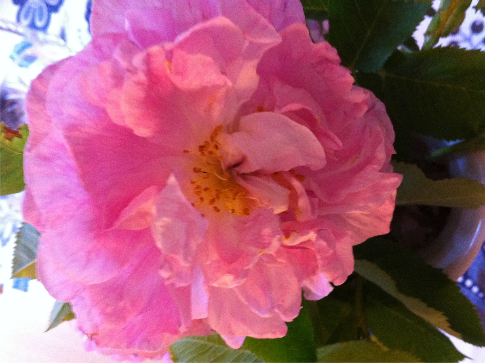

MIN KOLONILOTT
Klicka på bilder för detaljer
Vår-Sommar-Höst 2017
![Mitt lilla hus [2017-07-02]](images/House_01.png)
![Rosa ros [2017-07-02]](images/Rose_Pink_02.png)
![gulrosa ros [2017-07-14]](images/Rose_Yellow_Pink_01.png)
![Fläckig gulvit ros [2017-07-02]](images/Roses_Speckled_Yellow_White_01.png)
![Gula rosor [2017-07-02]](images/Roses_Yellow_01.png)

![Nyupptagen potatis [2017-07-06]](images/Potatoes_01.png)
➥ 2017-11-01: Min kolonilott har gått i ide för vintern. De två stora händelserna under hösten var bygget av perrongen, dvs ett trägolv utmed husets ena långsida, och stenläggningen av gångar. Perrongen krävde "bygglov" från föreningens styrelse. Jag lämnade in en skiss, som godkändes och bygget påbörjades. 9 september stod perrongen färdig. I mitten på september påbörjades arbetet med stenläggningen. Stenarna hämtades från en kolonilott i Farsta, som kommunen bestämt sig för att bygga hus på. I slutet på september var det invigning. 7 oktober var det städdag och i mitt uppdrag ingick att måla grinden in till område 3. Dagen därpå fick vi slänga plast, trä, metall och annat skräp, som vi inte vill ha på våra lotter i sk Big Bag. 21 oktober fikade vi för sista gången utomhus och i slutet på oktober tog jag hem saker från stugan och lotten för vinterförvaring. Hösten var grå och tråkig. Tyvärr hann jag inte klippa ned perenner och höstgräva men det kommer en vår!
➥ 2018-05-20: Våren har kommit. I januari startade vi en fröcirkel. Där träffades vi ca 10 personer för att förbereda vårt odlande. Vi bytte fröer, gjorde gemensamma inköp och delade med oss av våra odlingserfarenheter. I mars började planeringen på allvar, jord och gödsel beställdes. Även våren var grå och lå-å-å-ng. 22 mars valde vi ny styrelse. 23 april kom vår beställning av jord och gödsel. 3 maj eldade vi 4 angränsande grannar taggiga buskar och annat. Samtidigt började vårbruket. Caprifolen flyttade in från Råcksta koloniområde till Tanto. 14 maj fick jag hjälp att sätta potatis, the American way. Sorter i år Cherie och Amandine. Maj och juni blev torra månader och fröer och plantor fick vattnas var och varannan dag. Skörden av jordgubbar rekordartad. Jordgubbar och färskpotatis klara veckan före midsommar var något nytt och överraskande i min odlarkarriär. Nu får vi se hur fortsättningen blir.
"Om du vill vara lycklig en kort tid, bli full. Om du vill vara lycklig under en lång tid, bli kär. Om du vill vara lycklig för alltid, bli kolonist."
I juni 1914 bröt första världskriget ut. För Sveriges del började ransoneringar på smör, bröd, socker, mjölk, kaffe och potatis. Smöret tog snabbt slut. Sedan tog den billiga potatisen slut. Detta ledde till omfattande hungerkravaller. Redan 1916 delade Stockholm stad ut gratis sättpotatis till folk, som fick tillstånd att odla mitt i stan. I Tanto på Södermalm uppläts sluttningarna till folk, som bodde i närheten. De grupperna av potatisodlare bildade koloniföreningarna Tanto södra år 1917, Tanto mindre och Tanto norra 1919. Tanto norras ursprungliga område bestod i början på 1920-talet av odlingslotter, och den dominerande grödan var potatis. 1984 fick föreningen byggnadslov för stugor om 10 kvm. 20 år senare ställde jag mig i kö för att få arrendera en lott i föreningen. Idag har föreningen 93 lotter, varav ca 10 odlingslotter. Vi har ett fint föreningshus, som invigdes i maj 2006 . Vi har kommunalt vatten sedan ett antal år tillbaka. Från första början hämtades vatten från Årstaviken. Vi har inte el i stugorna med några få undantag
.E.S.
I augusti 2003 gifte sig en av mina bästa vänner på en kolonilott i Tanto Norra. Jag var med som vittne. Det var början till min karriär som kolonist. Jag erbjöds möjlighet att bli medodlare hos systern till brudgummen. Hon har en stor lott på över 400 kvm,så det fanns plats för oss båda. Efter ett antal år var det min tur att få en egen lott. Det var då föreningens minsta lott på 56 kvm. Den lotten hade jag i 4 år och odlade potatis, lök, grönsaker och bär. 2015 i maj blev jag med en liten gul stuga med vita knutar och 167 kvm mark. Det blev en underbar nystart men det innebar en hel del arbete med att flytta lökar och perenner mm. Första året ägnades en hel del tid åt att fixa till huset. Det behövde målas in- och utvändigt. Verandastaketet måste bytas ut. Det jag inte kunde göra själv, tog jag hjälp till. Sent omsider kom jag igång med själva odlandet. De följande 2 åren har jag införskaffat pallkragar att odla i, låtit bygga ordentliga gångar och en ny uteplats, perrongen. Perrongen är ett brädgolv vid en av husets långsidor, där man kan fika i lugn och ro. Vi är mycket för att fika, mina grannar och jag. Vi har ett mycket gott samarbete, byter fröer, delar perenner och deltar i föreningsarbetet. Den här sidan tänker jag använda dels för att berätta om vad som händer på lotten men dels för mig själv, som en slags loggbok över vad som sker.
Var går tiden när jag är i min kolonilott?
AvkopplingStädning
Vattning
Trimning
Ogräsrensning
Grävning
Plantering
Typer av växter som jag odlar:
Blommor
10+Grönsaker
7+Suckulenter
5+Örter
4+Bär
3+Frukt
2+Klicka på bilder för detaljer
Vår-Sommar-Höst 2017
Vår-Sommar 2018
![Röd tulpaner [2018-05-14]](images/image_05_TulipsRed.png)
![Röd tuHpaner [2018-05-14]](images/image_09_TulipsRed.png)
![Nya gångarna med plattor från vännerna i Sköndal [2018-07-04]](images/image_15_NewSteppingBlocks.png)
[webmaster: vs@it.uu.se]